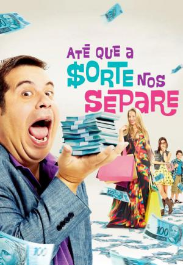

Sejam bem-vindos ao Aluga FGS!
Explore os melhores filmes e séries conosco.
Aluga FGS: A Revolução no Aluguel de Filmes e Séries Online
Bem-vindo ao Aluga FGS, o seu destino definitivo para alugar filmes e séries de forma simples, rápida e conveniente. Nosso objetivo é proporcionar a você uma experiência de entretenimento sem igual, oferecendo uma vasta seleção de títulos para todos os gostos e idades, diretamente na sua tela.
No Aluga FGS, entendemos que a diversidade e a qualidade são fundamentais quando se trata de entretenimento. Por isso, nosso catálogo inclui desde os últimos lançamentos de blockbuster até clássicos adorados e séries imperdíveis. Se você é um fã de ação, comédia, drama, ficção científica ou qualquer outro gênero, temos algo especial para você.
Por que escolher o Aluga FGS?
Clique aqui e saiba mais
- Variedade Incomparável: Navegue por uma ampla gama de filmes e séries, incluindo lançamentos recentes e grandes sucessos do passado. Nossa biblioteca é constantemente atualizada para garantir que você tenha acesso ao melhor do entretenimento.
- Facilidade de Uso: Nossa plataforma foi projetada para ser intuitiva e fácil de usar. Com apenas alguns cliques, você pode encontrar, alugar e assistir ao que deseja sem complicações.
- Flexibilidade de Aluguel: Oferecemos opções de aluguel que se adaptam ao seu ritmo de vida. Escolha o filme ou a série que deseja assistir e alugue por um período que atenda às suas necessidades.
- Qualidade Garantida: Desfrute de uma experiência de visualização de alta qualidade com streaming em HD e suporte a diferentes dispositivos. Quer esteja em casa ou em movimento, o Aluga FGS garante uma visualização impecável.
- Segurança e Confiabilidade: Seu entretenimento é nossa prioridade. Usamos tecnologia de ponta para garantir que suas informações pessoais e financeiras estejam seguras e protegidas.
O Aluga FGS é mais do que um simples serviço de aluguel; é uma plataforma que une paixão pelo cinema e pela televisão com inovação tecnológica. Nossa missão é transformar a maneira como você consome mídia, oferecendo uma solução moderna e acessível para todos os seus desejos de entretenimento.
Junte-se a nós e descubra a maneira mais prática e emocionante de alugar filmes e séries online. No Aluga FGS, a diversão está sempre ao seu alcance.
Destaques em 2024
Borderlands: "O Destino do Universo Está em Jogo"
Jackpot: Loteria Mortal

Alien Romulus
Últimas Resenhas
Até que a Sorte nos Separe
Veja o Trailer:
Sinopse do filme:
Até que a Sorte Nos Separe é um filme brasileiro dirigido por Roberto Santucci e estrelado por Leandro Hassum e Danielle Winits. Lançado em 2012, o longa é inspirado no best-seller Casais Inteligentes Enriquecem Juntos, de Gustavo Cerbasi. A trama acompanha Tino, um personal trainer e pai de família, e sua esposa Jane, que ganham 100 milhões na Mega-Sena e passam a viver uma vida luxuosa. No entanto, após 16 anos, sem investir ou guardar o dinheiro, enfrentam dificuldades financeiras. Com a ajuda do vizinho Amauri, um consultor financeiro, Tino busca soluções para salvar sua família e casamento.
O Meu Pai é um Perigo
Veja o Trailer:
Sinopse do filme:
“Meu Pai É Um Perigo” centra-se em Sebastian, que pretende pedir a mão da namorada Ellie em casamento. Ao saber da novidade, seu pai, o imigrante italiano Salvo, insiste em passar mais tempo com a família da futura noiva de seu filho. A aproximação é encorajada pela moça, mas o fim de semana com a família super-rica e excêntrica dela se transforma em um choque cultural. Sebastian e Salvo concluem que entre as famílias, não existe nada em comum. O filme é baseado na vida do comediante Sebastian Maniscalco, que costuma ver sua experiência de crescer com pais imigrantes através de lentes cômicas.
Um Dia Cinco Estrelas

Veja o Trailer:
Sinopse do filme:
“Um Dia Cinco Estrelas”, novo filme dirigido por Hsu Chien (“Desapega!” e “Me tira da Mira”), ganhou cartaz oficial e data de estreia. O longa retrata a história de Pedro Paulo (Estevam Nabote), um rapaz que decide colocar o seu carro, um Opala anos 70 carinhosamente apelidado de “Mozão”, na rua e trabalhar como motorista de aplicativo para poder pagar pela festa de aniversário de 60 anos da mãe (Nanny People). O que ele não contava era com a variedade dos passageiros que acabam virando seu dia de cabeça para baixo. Com roteiro de Ricky Hiraoka e Cris Wersom, produção da Paris Entretenimento, coprodução de Simba, Claro e Paramount Pictures e distribuição da Paris Filmes, “Chien aposta na mistura dos gêneros de comédia e aventura.